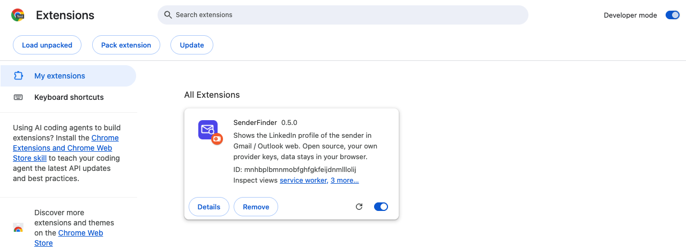

安装 SenderFinder
Chrome 应用商店还没上架，所以要从源码加载。两分钟，每个浏览器装一次。
你需要在桌面版 Chrome、Edge 或其他 Chromium 浏览器上安装；手机版应用装不了插件。截图是英文的，插件本身跟随浏览器语言。
隐私一览
- 你粘贴的 key 保存在这台设备上插件自己的存储里，只会随你发起的查询发送给对应供应商的 API。
- 查询请求从浏览器直接发送给你配置的数据供应商——查询路径上没有 SenderFinder 服务器。匿名每日使用统计默认开启，可以在设置里关闭。
- 随时可以在设置里删掉 key——没有 key，任何付费查询都跑不了——或者卸载插件，卸载会删掉它的存储。
五个步骤
-
1
拿到代码
在 GitHub 上把仓库下载成 ZIP（「Code」→「Download ZIP」）然后解压，或者有 git 的话直接 clone：
git clone https://github.com/astonysh/SenderFinder.git -
2
在 Chrome 里加载
在新标签页打开
chrome://extensions。开启开发者模式（右上角），点加载已解压的扩展程序，选择仓库里的extension/文件夹——是包含manifest.json的那个文件夹，不是仓库根目录。
开发者模式已开，SenderFinder 卡片已加载。 -
3
拿一把 key 填进去
安装完成后设置页会自己打开。在 Monid（Hunter、Apollo、ContactOut）或 treg（BlitzAPI、QuickEnrich、Village）创建一个 key；Firecrawl 是可选的。一把就够。把它填到「供应商 key」下面。

首次安装后的设置页：key 在上面，步骤和价格在下面。 -
4
点「测试 key（免费）」
这个检查是免费的：只验证 key 并读取供应商的价格表。不查任何人，也不花任何钱。key 旁边显示「有效」就对了。
-
5
打开 Gmail，点一次工具栏图标
在 Gmail 里打开任意一封邮件，然后点 Chrome 工具栏里的 SenderFinder 图标。如果看不到，先点拼图图标把 SenderFinder 固定住。侧边栏会在那个标签页里打开并一直开着；之后它会跟着你正在读的邮件变。

第一次点击之后，侧边栏会在这个标签页里一直开着。
等 Chrome 应用商店上架后，这个页面会变成一键安装；在那之前，上面的步骤是唯一的安装方式。
该选哪把 key？
一把 key 就能把整个流程跑完：没有 key 的步骤会被静默跳过。这张表是 README 里供应商对比的精简版。
| Key | 能跑的步骤 | 每次命中的价格 | 基准测试里的覆盖 | 适合 |
|---|---|---|---|---|
| BlitzAPI → QuickEnrich（可再开 Village） | $0.0005–0.005 | 大约一半到 60 % 的工作邮箱 | 预算紧、量大 | |
| Hunter → Apollo（可再开 ContactOut） | $0.005–0.026 | Apollo 19 次调用全部匹配 | 要命中率 | |
| 两把都有 | 整条链：BlitzAPI → Hunter → QuickEnrich → Apollo | 平均 $0.011 每个地址 | 48 / 50（96 %） | 默认选项；最便宜的步骤先试，Apollo 兜底 |
| 只有 Data Legion | 10 credits（≈ $0.008–0.032） | 没有命中率数据 | 不建议单独用，只做兜底 |
Apollo、Hunter 和 ContactOut 都是经 Monid 调用的；BlitzAPI、QuickEnrich 和 Village 经 treg。直接拿这些数据源自己的 API key 填进来是没用的。
如果有地方不对劲
侧边栏打不开
先固定 SenderFinder：工具栏里的拼图图标 → 固定。然后在有 Gmail 标签页打开时点一次它的图标。侧边栏不会自己弹出来，而且是每个标签页各自一个。
侧边栏说「未设置 key」
在插件设置里填一把 key。一把就够：没有 key 的供应商对应的步骤会被跳过，不报错。
在 Outlook 里没反应
Outlook 网页版是尽力支持，它的页面结构经常变。如果发件人旁边的小标记没出现，开一个 issue 并贴上发件人那行的 HTML。
gmail.com 或 info@ 的地址不查
个人邮箱域名和职能邮箱默认跳过，因为它们很少能对应到资料。侧边栏里有「仍然查询」按钮。
今天忽然不查人了
要么用完了每天上限（默认 $2），要么到了自动查询次数上限（每天 30 次）。两个都能在设置里改；计数器第二天重置。
以后怎么更新
把新文件放进同一个文件夹，然后在 chrome://extensions 里点卡片上的刷新箭头。插件 id 固定写在 manifest 里，所以 key、缓存和历史都不会丢。